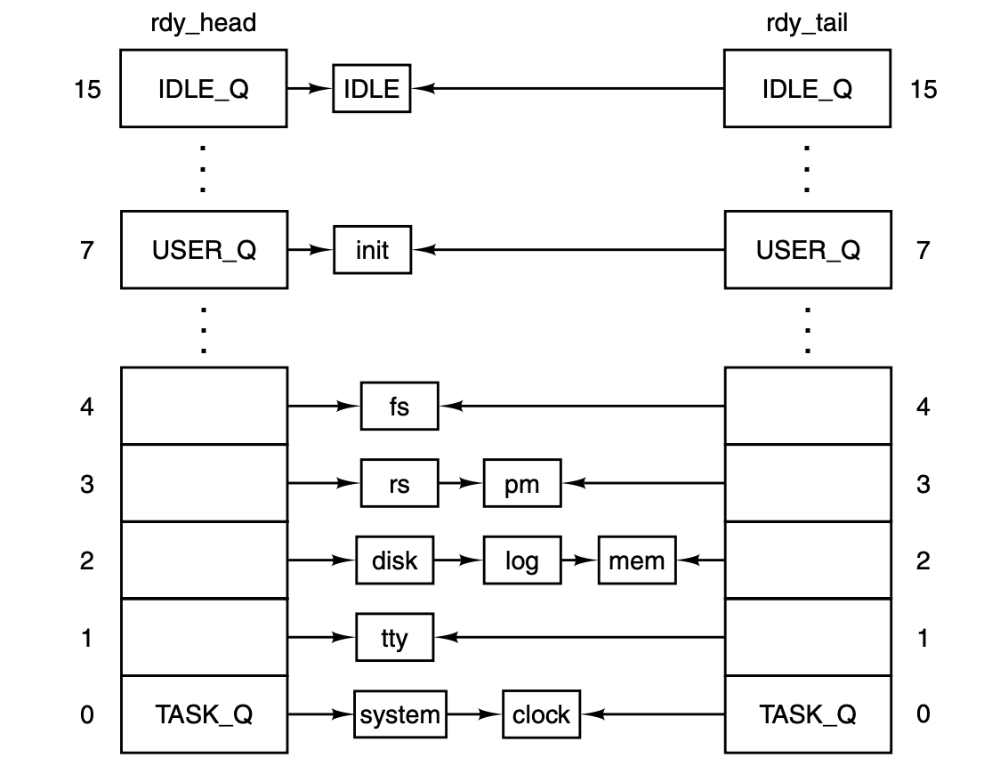

Operating Systems Design and Implementation Notes
5. Process Scheduler
By Jiawei Wang
At the end of last note, we introduced that if a running process uses up its quantum without interruption and returning (still runable) inside a clock tick.
The clock_task() will call do_clocktick() and this function will execute the follwoing code:
if (prev_ptr->p_ticks_left <= 0 && priv(prev_ptr)->s_flags & PREEMPTIBLE) {
dequeue(prev_ptr); /* take it off the queues */
enqueue(prev_ptr); /* and reinsert it again */
}
We only know that these two functions dequeue() and enqueue() will reinsert the current unfinished process into a "Ready" status process queue and pick another process to run.
- How to pick next process from countless processes to run?
- How to design this process scheduler to manage these processes with piority?
NOTE: Since interrupts are not enabled while kernel code is running in Minix3, we do not consider any interruption in this note. And in next note, we will talk about more about interrupt with interprocess communication.
1. Scheduling in Minix3
MINIX 3 uses a multilevel scheduling algorithm to mantain processes inside 16 queues of runnable processes, scheduling is round robin in each queue.
For example, in the previous note, when we talk about the start of the Minix3, the main() function of minix3 will initialize the boot process table. Then processes are given initial priorities that are related to the structure shown in Fig. 2-29.

- The clock and system tasks in layer 1 receive the highest priority.
- The device drivers of layer 2 get lower priority, but they are not all equal.
- Server processes in layer 3 get lower priorities than drivers, but some less than others.
- User processes start with less priority than any of the system processes, and initially are all equal.
The scheduler maintains 16 queues of runnable processes, although not all of them may be used at a particular moment.

Whenever a running process becomes blocked or finished, or a runnable process is killed by a signal, that process is removed from the scheduler’s queues. Only runnable processes are queued.
- The array
rdy_headhas one entry for each queue, with that entry pointing to the process at the head of the queue. rdy_tailis an array whose entries point to the last process on each queue.- If a running process uses up its quantum it is moved to the tail of its queue and given a new quantum.
- When a blocked process is awakened, it is put at the head of its queue if it had any part of its quantum left when it blocked, it gets only what it had left when it blocked.
2. Process Scheduler
In essence, pick_proc() in kernel/proc.c from line 1297 to 1332 is the scheduler.
The Scheduling Algorithm
Find the highest priority queue that is not empty and pick the process at the head of that queue. The IDLE process is always ready, and is in the lowest priority queue. If all the higher priority queues are empty, IDLE is run.
PRIVATE void pick_proc()
{
/* Decide who to run now. A new process is selected by setting 'next_ptr'.
* When a billable process is selected, record it in 'bill_ptr', so that the
* clock task can tell who to bill for system time.
*/
register struct proc *rp; /* process to run */
int q; /* iterate over queues */
NOREC_ENTER(pick);
/* Check each of the scheduling queues for ready processes. The number of
* queues is defined in proc.h, and priorities are set in the task table.
* The lowest queue contains IDLE, which is always ready.
*/
for (q=0; q < NR_SCHED_QUEUES; q++) {
int found = 0;
if(!(rp = rdy_head[q])) {
TRACE(VF_PICKPROC, printf("queue %d empty\n", q););
continue;
}
TRACE(VF_PICKPROC, printf("found %s / %d on queue %d\n",
rp->p_name, rp->p_endpoint, q););
next_ptr = rp; /* run process 'rp' next */
vmassert(proc_ptr != next_ptr);
vmassert(!next_ptr->p_rts_flags);
if (priv(rp)->s_flags & BILLABLE)
bill_ptr = rp; /* bill for system time */
NOREC_RETURN(pick, );
}
minix_panic("no runnable processes", NO_NUM);
}
Each queue is tested. TASK_Q is tested first, and if a process on this queue is ready, pick_proc sets proc_ptr and returns immediately. Otherwise, the next lower priority queue is tested, all the way down to IDLE_Q.
Put a Process into Queue
The sched() function picks which queue to put a newly-ready process on, and whether to put it on the head or the tail of that queue.
PRIVATE void sched(rp, queue, front)
register struct proc *rp; /* process to be scheduled */
int *queue; /* return: queue to use */
int *front; /* return: front or back */
{
/* This function determines the scheduling policy. It is called whenever a
* process must be added to one of the scheduling queues to decide where to
* insert it. As a side-effect the process' priority may be updated.
*/
int time_left = (rp->p_ticks_left > 0); /* quantum fully consumed */
/* Check whether the process has time left. Otherwise give a new quantum
* and lower the process' priority, unless the process already is in the
* lowest queue.
*/
if (! time_left) { /* quantum consumed ? */
rp->p_ticks_left = rp->p_quantum_size; /* give new quantum */
if (rp->p_priority < (IDLE_Q-1)) {
rp->p_priority += 1; /* lower priority */
}
}
/* If there is time left, the process is added to the front of its queue,
* so that it can immediately run. The queue to use simply is always the
* process' current priority.
*/
*queue = rp->p_priority;
*front = time_left;
}
It check is made to see if the entire quantum was used:
- If not, it will be restarted with whatever it had left from its last turn.(Set front=1 means this process need to be insert to the front of the queue)
- if the entire quantum was used but other processes have had a chance to run, the priority of this process minus one.(lower the priority)
3. Transitions between Status
This Fig 2-2 was metioned in the Chapter2/1.Introduction to Processes.

Most of these transitions can be done by two functions: enqueue() and dequeue():
-
Running -> Blocked:
enqueue(next_proc)(sys_call) -
Running -> Ready:
dequeue(proc_ptr)+enqueue(proc_ptr)(do_clocktick) -
Ready -> Running:
enqueue(proc_ptr)(do_clockticksys_calldo_exec) -
Block -> Ready: return from
1. enqueue(next_proc)
These two functions are also simple but useful, both of them were in kernel/proc.c:
enqueue(proc_ptr)
- Call
sched(proc_ptr)to add this process to one of the queue of runnable processes. - Call
pick_proc()to determine which process to run next by assigning thenext_ptr.
PUBLIC void enqueue(rp)
register struct proc *rp; /* this process is now runnable */
{
/* Add 'rp' to one of the queues of runnable processes. This function is
* responsible for inserting a process into one of the scheduling queues.
* The mechanism is implemented here. The actual scheduling policy is
* defined in sched() and pick_proc().
*/
int q; /* scheduling queue to use */
int front; /* add to front or back */
NOREC_ENTER(enqueuefunc);
#if DEBUG_SCHED_CHECK
if(!intr_disabled()) { minix_panic("enqueue with interrupts enabled", NO_NUM); }
if (rp->p_ready) minix_panic("enqueue already ready process", NO_NUM);
#endif
/* Determine where to insert to process. */
sched(rp, &q, &front);
vmassert(q >= 0);
vmassert(q < IDLE_Q || rp->p_endpoint == IDLE);
/* Now add the process to the queue. */
if (rdy_head[q] == NIL_PROC) { /* add to empty queue */
rdy_head[q] = rdy_tail[q] = rp; /* create a new queue */
rp->p_nextready = NIL_PROC; /* mark new end */
}
else if (front) { /* add to head of queue */
rp->p_nextready = rdy_head[q]; /* chain head of queue */
rdy_head[q] = rp; /* set new queue head */
}
else { /* add to tail of queue */
rdy_tail[q]->p_nextready = rp; /* chain tail of queue */
rdy_tail[q] = rp; /* set new queue tail */
rp->p_nextready = NIL_PROC; /* mark new end */
}
#if DEBUG_SCHED_CHECK
rp->p_ready = 1;
CHECK_RUNQUEUES;
#endif
/* Now select the next process to run, if there isn't a current
* process yet or current process isn't ready any more, or
* it's PREEMPTIBLE.
*/
vmassert(proc_ptr);
if((proc_ptr->p_priority > rp->p_priority) &&
(priv(proc_ptr)->s_flags & PREEMPTIBLE))
pick_proc();
#if DEBUG_SCHED_CHECK
CHECK_RUNQUEUES;
#endif
NOREC_RETURN(enqueuefunc, );
}
dequeue(proc_ptr)
PUBLIC void dequeue(rp)
register struct proc *rp; /* this process is no longer runnable */
{
/* A process must be removed from the scheduling queues, for example, because
* it has blocked. If the currently active process is removed, a new process
* is picked to run by calling pick_proc().
*/
register int q = rp->p_priority; /* queue to use */
register struct proc **xpp; /* iterate over queue */
register struct proc *prev_xp;
NOREC_ENTER(dequeuefunc);
#if DEBUG_STACK_CHECK
/* Side-effect for kernel: check if the task's stack still is ok? */
if (iskernelp(rp)) {
if (*priv(rp)->s_stack_guard != STACK_GUARD)
minix_panic("stack overrun by task", proc_nr(rp));
}
#endif
#if DEBUG_SCHED_CHECK
if(!intr_disabled()) { minix_panic("dequeue with interrupts enabled", NO_NUM); }
if (! rp->p_ready) minix_panic("dequeue() already unready process", NO_NUM);
#endif
/* Now make sure that the process is not in its ready queue. Remove the
* process if it is found. A process can be made unready even if it is not
* running by being sent a signal that kills it.
*/
prev_xp = NIL_PROC;
for (xpp = &rdy_head[q]; *xpp != NIL_PROC; xpp = &(*xpp)->p_nextready) {
if (*xpp == rp) { /* found process to remove */
*xpp = (*xpp)->p_nextready; /* replace with next chain */
if (rp == rdy_tail[q]) /* queue tail removed */
rdy_tail[q] = prev_xp; /* set new tail */
#if DEBUG_SCHED_CHECK
rp->p_ready = 0;
CHECK_RUNQUEUES;
#endif
if (rp == proc_ptr || rp == next_ptr) /* active process removed */
pick_proc(); /* pick new process to run */
break;
}
prev_xp = *xpp; /* save previous in chain */
}
#if DEBUG_SCHED_CHECK
CHECK_RUNQUEUES;
#endif
NOREC_RETURN(dequeuefunc, );
}
In the next note, we will further study the implementation of process in Minix3, with considering more situations when a process is running. Like interruption and race conditions that we talked about the concepts earlier at of this chapter.